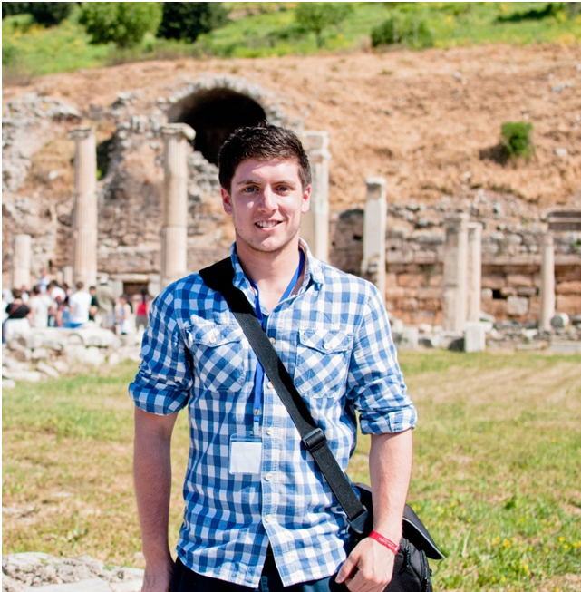

Owen Harney

Owen Harney is a PhD Candidate in the School of Psychology at NUI Galway.
His research interests centre on collaborative learning, specifically,
how groups can learn and work together effectively. Through this line of
research and related community work in NUIG, Owen has become increasingly
interested in citizen engagement. Owen has been active in student representation,
serving on the Psychological Society of Ireland Student Affairs Group (PSISAG),
and as Member Representative for PSISAG on the European Federation of
Psychology Students’ Associations (EFPSA). Owen hopes to combine his
interests in psychology and citizen engagement in this programme,
and future projects.